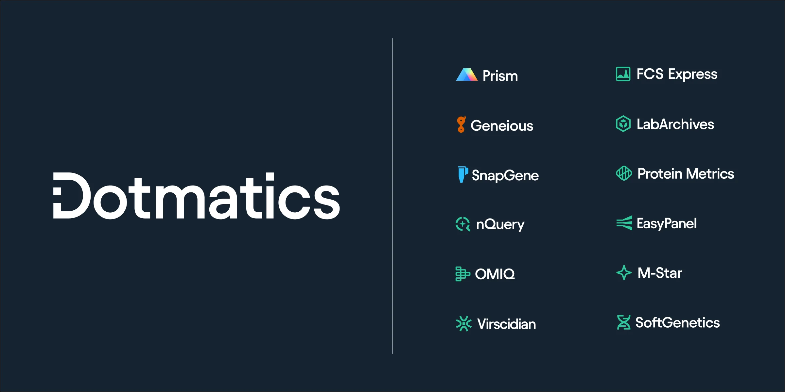
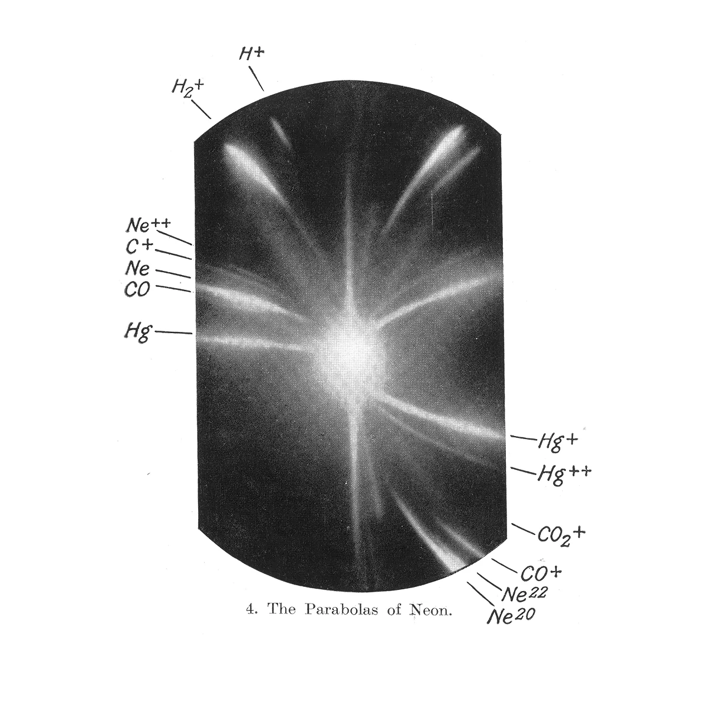
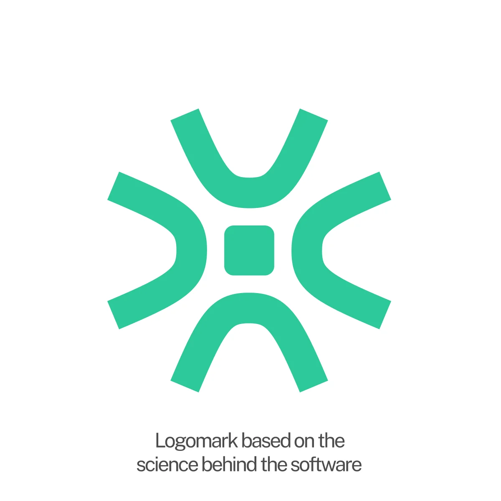
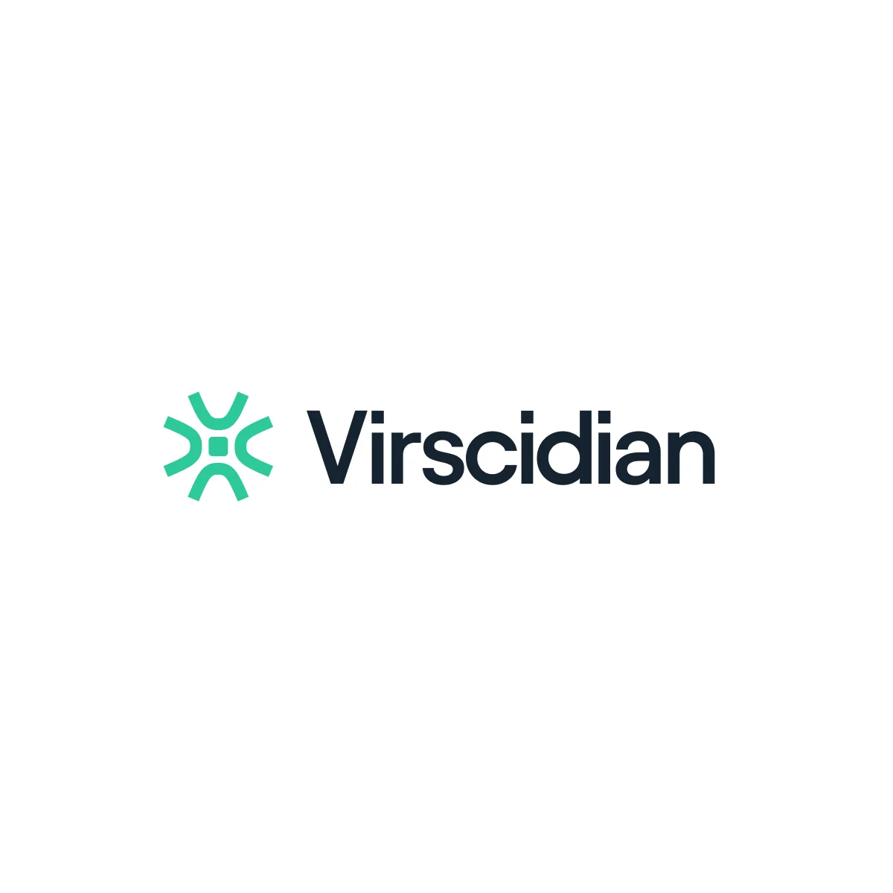
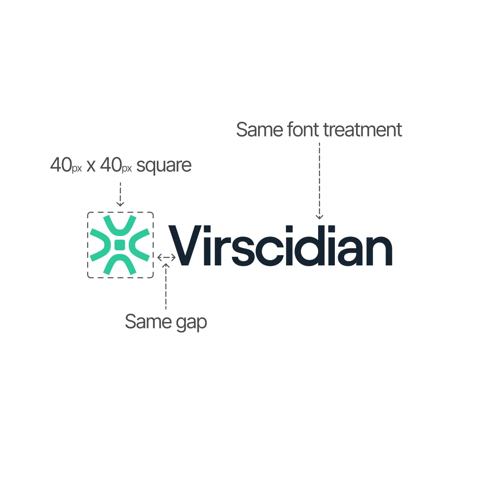
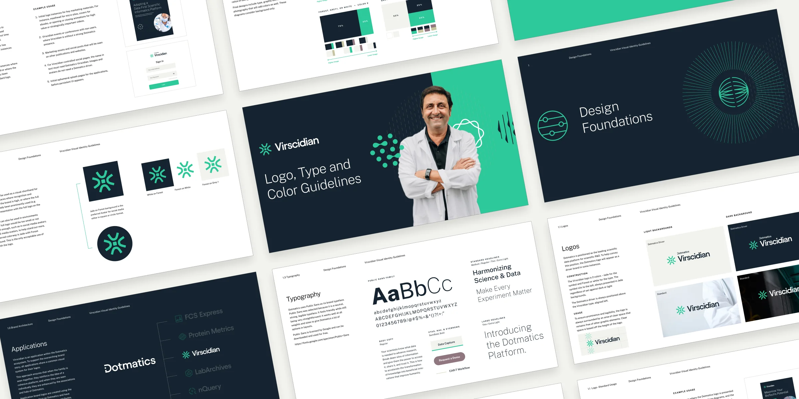
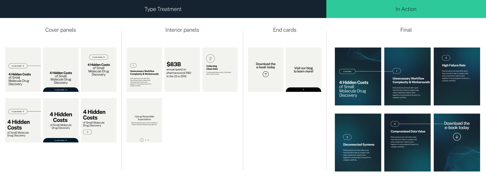
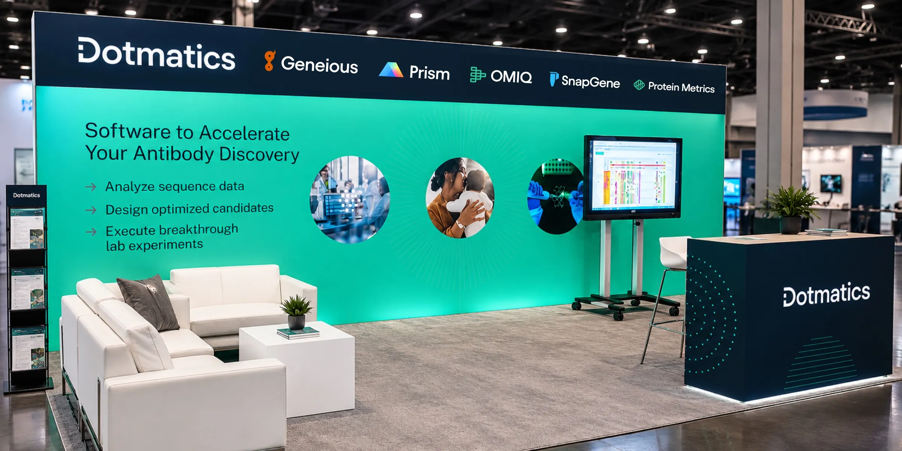

Dotmatics
One brand system held a dozen scientific software brands together through six years of growth and a $5.1 billion acquisition.
- Client
- Dotmatics, scientific software for life sciences R&D
- Role
- Senior Visual Designer (contract). I built the system and still run it.
- Years
- 2020 to now
- Scope
- Brand system, subsidiary brand architecture, guidelines, campaigns, presentations, web, social, trade show, motion

The problem
An acquisition left one company with a dozen brands, each with its own logo, type, color and rules.
When I came on, Insightful Science had just acquired Dotmatics. Leadership decided the Dotmatics brand was stronger and dropped the Insightful Science name, but every product brand still had its own identity, its own audience and its own way of making marketing.
Left alone, each team would tailor the brand to its product and the company would read as a group of strangers. The job was a system flexible enough for each product to speak to its audience, and strict enough that all of them still looked like one company.




The thinking
Give every team enough to make its own materials, and rules strict enough that it all stays Dotmatics.
Teams go off-brand when they have to source their own graphics, icons and photos. So instead of policing the output, I gave them everything they would otherwise go looking for, and paired each element with rules for how to use it: how graphics sit with imagery, how large they run next to type, what to look for in a new stock photo.
The system was built to change. As products were added, sold and renamed, I added and removed pieces without rebuilding the foundation.

The system
A shared kit in Figma that anyone in the company can open and use.
- Logo architecture. A rule for how every product brand locks up with the Dotmatics mark.
- Graphics. A set of brand graphics, with rules for scale and pairing with imagery.
- Icons. A deep library for dense, technical material.
- Photography. A curated stock pool, plus written criteria for choosing new images.
- Templates. Standards for social ads, banners, YouTube thumbnails, presentations and documents.

In the world
Six years of ebooks, one-pagers, decks, websites, booths and ad campaigns, all from the same kit.
I lead the visual direction across every channel, and the system has grown with the company instead of being replaced by it.

Results
- Scientists using Dotmatics
- 2M+
- Countries
- 180+
- Acquisition by Siemens
- $5.1B
Design didn't close the Siemens deal. What the system did was give a company growing through acquisitions one recognizable face in every market it entered, without a rebrand every time it bought something.
Adrian to add: one or two numbers that are yours, not the company's. For example: assets produced per year, number of brands brought into the system, templates in use, or turnaround time before and after the Figma library.